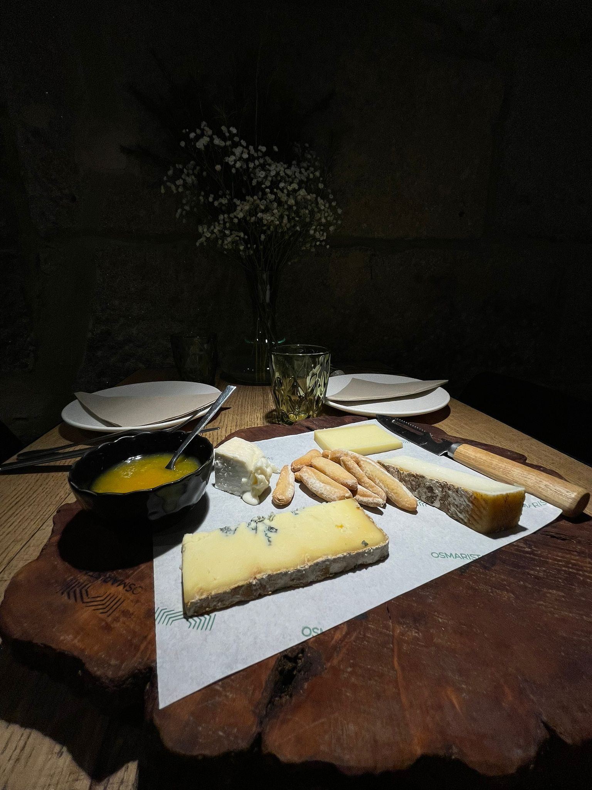

Tapas



Tabla de quesos artesanales(160gr)
Mezcla de diversos quesos (gallegos, españoles y franceses) mermelada y picos.
Selección de quesos
-Olavidia (Jaen):
Queso de leche cruda de cabra con una veta de carbon en el centro hecho a partir de las pepitas de las aceitunas.
-Montes de Alcalá BIO (Cádiz):
Queso curado ecológico de cabra 100% payoya pasteurizado cubierto con una fina capa de aceite de oliva.
-Morbier (Francia):
Queso francés de leche cruda de vaca (Montbeliard y Simmental), madurado mínimo 40 días, con una fina capa de carbón vegetal en el centro. No pasteurizado
-Savel (Lugo):
Queso curado de vaca jersey procedente de Chantada, con 2 meses de maduración y premiado como mejor queso azul de España 2020-21. No pasteurizado.
-Olavidia (Jaen):
Queso de leche cruda de cabra con una veta de carbon en el centro hecho a partir de las pepitas de las aceitunas.
-Montes de Alcalá BIO (Cádiz):
Queso curado ecológico de cabra 100% payoya pasteurizado cubierto con una fina capa de aceite de oliva.
-Morbier (Francia):
Queso francés de leche cruda de vaca (Montbeliard y Simmental), madurado mínimo 40 días, con una fina capa de carbón vegetal en el centro. No pasteurizado
-Savel (Lugo):
Queso curado de vaca jersey procedente de Chantada, con 2 meses de maduración y premiado como mejor queso azul de España 2020-21. No pasteurizado.
4€
Fuera de carta (Consultar disponibilad)
Postres
Tarta de queso al horno
6€
Cervezas
Estrella Galicia Bodega
Clasificación Lager Especial
Cerveza que, recién hecha y sin pasteurizar, llega directamente de nuestras bodegas al punto de venta. La ausencia de pasteurización requiere que su transporte se realice en frío mediante de una red de vehículos especializados y personal propio. En las cervecerías los característicos tanques mantienen su refrigeración y los mismos niveles de carbónico con los que sale de las bodegas de nuestra fábrica. Estas particulares características le confieren unos atributos sensoriales propios que la convierten en una cerveza diferente.
4€